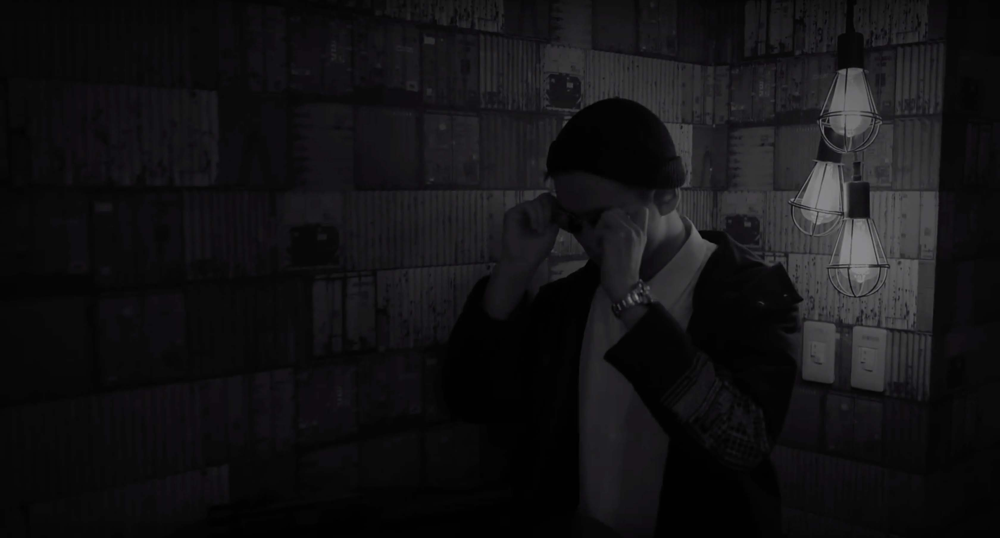
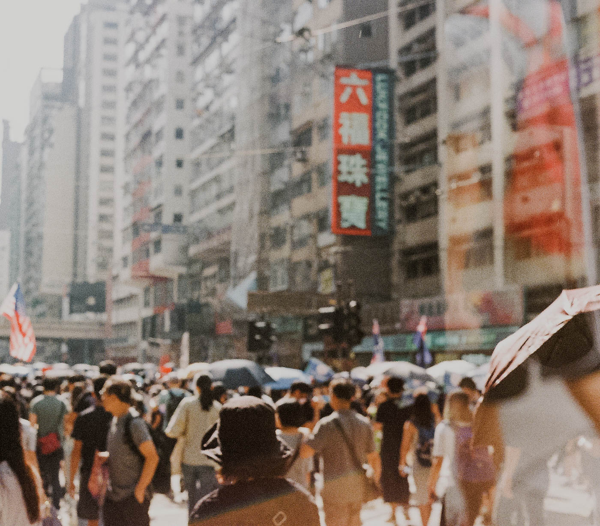
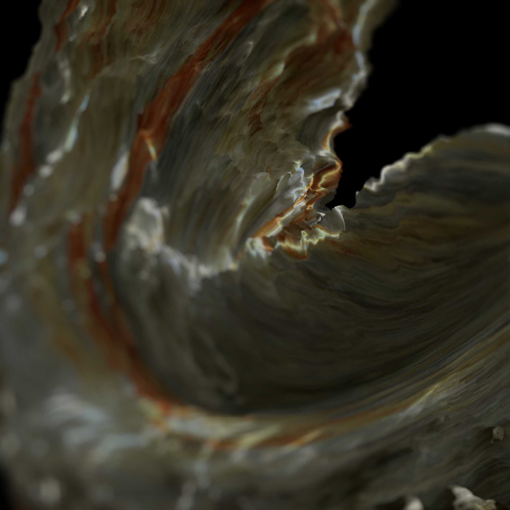

Multimedia Design
Installation
Video Art & Film
Photography
Portfolio Key Visual Design
29.97
Do Sh*t You Love
多媒體設計 Multimedia Design
29.97 look like a scrambled text at first sight, but it’s able to make
digital images synchronized with digital sounds. As a result, it has
become a primogenitor and a major breakthrough in digital technology.
We visualized number 29.97 as magnetic tapes and then distort them.
In doing so, these tapes will be no longer functional, yet we can carry
out the dynamic of its light and shade while attainingimpossibility
of its form.
Like students from DMD ( Department of Digital Media Design)
in Ming Chuan University, who dare to challenge themselves and
explore the unknown.
Just “Do Sh*t You Love”, everyone can create their own “29.97”.
29.97雖其數字看似亂碼，但是卻使數位影像影音同步，
因此成為媒體技術的始祖和重大突破。
將29.97視覺化為磁帶，對其破壞性的扭曲雖破壞其播放功能，
但實現了磁帶多樣的光影變化和造型上的不可能。
如同展覽者，勇敢面對自我，嘗試未知，Just “Do Sh*t You Love.”
人人都能創造屬於自己的「29.97」。

Fasllow
多媒體設計 Multimedia Design
用三部實驗影片呈現三種因速食文化所產生的社會議題。
過去的人們對於穿著或許只是為了達到基本需求， 但由於時代的進步與潮流文化的崛起， 現在的年輕人往往會覺得自己必須站在潮流的最前方， 但可能沒有辦法負擔得起精品品牌價位， 因此許多快時尚品牌崛起， 快時尚商品的定價通常低於競爭對手， 以低質量、高產量，吸引消費者，達到最高效益。 對於消費者來說， 可以在很短的時間， 以低廉的價格， 買到新潮的服飾。 但此現象也引發了許多社會及環境問題。 如對環境的殘害、勞工的剝削， 這是在追求快速的產業下容易衍生的問題。 因此我們想以此議題為探討切入點， 諷刺現代人過於追求快速產業而造成許多問題也失去了自我。
由於網路的發達與便利， 現代人越來越追求流行， 只要有任何產品突然爆紅並在網路隨之流傳開來， 一定會造成一股搶購風潮以及排隊效應。 但那些人追求的並不是物品本質， 而是比別人快一步擁有最新產品的虛榮心， 甚至買到東西時才發現這東西原來也沒什麼， 卻還是沾沾自喜的打卡發文。 有些人不排隊並不是要追求那件物品， 而是好奇前面的人在排甚麼， 然而這種好奇心也間接助長了盲從的風潮。
速食愛情這個觀念以前已有， 但由於科技以及網路的進步， 讓現代人的交友方式更多樣化也更加方便。 往往依賴於手機軟體或自己的感覺選擇自己的另一半， 追求快速、方便及多樣性，所以現代人較不重視面對面了解對方， 猶如自動販賣機，快速且隨意挑選自己相中的商品， 也能隨意拋棄。 諷刺現代人隨著時代進步， 膚淺的一拍即合文化取代了過去一般戀愛關係。
快時尚 FAST FASHION
過去的人們對於穿著或許只是為了達到基本需求， 但由於時代的進步與潮流文化的崛起， 現在的年輕人往往會覺得自己必須站在潮流的最前方， 但可能沒有辦法負擔得起精品品牌價位， 因此許多快時尚品牌崛起， 快時尚商品的定價通常低於競爭對手， 以低質量、高產量，吸引消費者，達到最高效益。 對於消費者來說， 可以在很短的時間， 以低廉的價格， 買到新潮的服飾。 但此現象也引發了許多社會及環境問題。 如對環境的殘害、勞工的剝削， 這是在追求快速的產業下容易衍生的問題。 因此我們想以此議題為探討切入點， 諷刺現代人過於追求快速產業而造成許多問題也失去了自我。
盲從 JUMP ON THE BANDWAGON
由於網路的發達與便利， 現代人越來越追求流行， 只要有任何產品突然爆紅並在網路隨之流傳開來， 一定會造成一股搶購風潮以及排隊效應。 但那些人追求的並不是物品本質， 而是比別人快一步擁有最新產品的虛榮心， 甚至買到東西時才發現這東西原來也沒什麼， 卻還是沾沾自喜的打卡發文。 有些人不排隊並不是要追求那件物品， 而是好奇前面的人在排甚麼， 然而這種好奇心也間接助長了盲從的風潮。
速食愛情 INSTANT LOVE
速食愛情這個觀念以前已有， 但由於科技以及網路的進步， 讓現代人的交友方式更多樣化也更加方便。 往往依賴於手機軟體或自己的感覺選擇自己的另一半， 追求快速、方便及多樣性，所以現代人較不重視面對面了解對方， 猶如自動販賣機，快速且隨意挑選自己相中的商品， 也能隨意拋棄。 諷刺現代人隨著時代進步， 膚淺的一拍即合文化取代了過去一般戀愛關係。
The Calm Mind
裝置藝術 Installation Art
將傳達的理念分為了三種不同層次，分別為「過去、現在、未來」。
由於「過去、現在、未來」三者有著不同時間點的特性存於其中，
因此，希望能讓觀者針對過去的迷惘、現在的體悟，
以及未來的展望進行三方面的人生省思。
另外，藉由問答的方式配合著三種不同時間層次，
進行一連串間歇性的問題以提問觀者，
藉由問答的方式讓觀者對於人生的記憶與省思。
此外，對於現在的敘述，將以縮時的都市生活影片呈現， 描述出現代人們對於生活的快速與瑣碎。藉由快速的縮時影像， 希望觀者可以對於現在的繁瑣有所體認，使其可以放下被社會促使的腳步， 重新思考這快速步伐的必要性，進而思索對於過去以及未來的省思與展望。
海，寧靜如同新生兒在母親肚子裡的羊水一般， 給予我們祥和與安逸之感，讓我們可以在放鬆的心境之下進行思索， 廣闊的等同於無邊無際的人生可能，給予我們廣大無際的空間， 讓我們能夠放眼於無限。因此，將海作為傳達意念的媒介， 藉由海的聲音、影像讓觀者可以在這段觀展期間沉澱心境。
此外，對於現在的敘述，將以縮時的都市生活影片呈現， 描述出現代人們對於生活的快速與瑣碎。藉由快速的縮時影像， 希望觀者可以對於現在的繁瑣有所體認，使其可以放下被社會促使的腳步， 重新思考這快速步伐的必要性，進而思索對於過去以及未來的省思與展望。
海，寧靜如同新生兒在母親肚子裡的羊水一般， 給予我們祥和與安逸之感，讓我們可以在放鬆的心境之下進行思索， 廣闊的等同於無邊無際的人生可能，給予我們廣大無際的空間， 讓我們能夠放眼於無限。因此，將海作為傳達意念的媒介， 藉由海的聲音、影像讓觀者可以在這段觀展期間沉澱心境。
DAYDREAM
無聊的現代生活
虛擬實境 VR / 實驗影片 Experimental Film
現在生活步調如此快速與瑣碎，
我們不得不懷疑自己有沒有認真放下腳步去審視過往自己一路走來的人生軌跡。
學生們，白天於學校上課，晚上輾轉去補習班繼續學習，深夜仍有作業等待完成。
出社會之後，白天認真於業務之中，晚上埋首於加班熬夜，深夜仍要打理家裡的家務。
人生就是不斷的被強押著去完成社會上給你的人生道路，將人生的行程表排定的過分充實。
因此，我創作影片的目標使觀眾，由心而起，由內而外的反思。
能夠放下社會上的種種繁瑣，用最平靜的心境去體認自己生命中應該有的價值與記憶。
一卷底片的旅程
Los Angeles to San Francisco
底片攝影 Film Photography / 影片 Video
底片是一種令我難以忘懷的東西。在我的旅行途中宛如一卷卷的底片。
對我自己而言，用底片記錄旅行，會令照片得來更珍貴，也令我更珍惜。
運用自己的腳步記錄這一個城市所敘述的故事，更是你我記憶的故事。
對我自己而言，用底片記錄旅行，會令照片得來更珍貴，也令我更珍惜。
運用自己的腳步記錄這一個城市所敘述的故事，更是你我記憶的故事。
女孩.花.瓶.燒散
人像攝影 Portrait Photography

29.97
Do Sh*t You Love
人像攝影 Portrait Photography
Shih Chien
Fashion Design PRAXES
人像攝影 Portrait Photography

我城小事
2019 富士X系列相機─台灣區X相片聯展
展出作品
展出作品
紀實攝影 Social Documentary Photography

香港運動
紀實攝影 Social Documentary Photography
無力感的約束
人像攝影 Portrait Photography
2020年的確是痛苦的一年，發生的事情多到讓我喘不過氣來，對於未知事情的焦慮感和不安，這份力量足以把我淹死。在這樣壓力下，我突然衍生出一個想法，不如用一輯相片表達我現在的感受。
剛好遇到VioletYeung機緣巧合下就促成了這次的拍攝。我問Violet你最恐懼的是什麼？她回答我說「未來」吧！對於未知的事，會感到不安。然後我就提議不如下水拍攝。
我一直覺得在水中，可以感受無重而溫柔的自然力量，暫時忘記煩惱和痛苦，閉上眼睛感受自然的流動，相信對於未解決的事情必然會想到解決方法。
剛好遇到VioletYeung機緣巧合下就促成了這次的拍攝。我問Violet你最恐懼的是什麼？她回答我說「未來」吧！對於未知的事，會感到不安。然後我就提議不如下水拍攝。
我一直覺得在水中，可以感受無重而溫柔的自然力量，暫時忘記煩惱和痛苦，閉上眼睛感受自然的流動，相信對於未解決的事情必然會想到解決方法。

聲
人像攝影 Portrait Photography
2020年11月份的時候看了一部電影《無聲》有感而發，電影描述台灣的校園欺凌、性侵事件。
而這一部電影更令我思考自己的存在價值，尋求的認同是什麼?
可能一直以來在社會不同角落，有一群完全被聲音遺忘的人，努力為生命奮鬥，追逐自我內心永不放棄的堅持。但就像電影的聾啞人士一樣面對社會的歧視，十分難堪與無奈。所以就用這個想法去拍攝一輯照片去表達。
有時候語言都是一種武器，更可怕是社會的角色定型和價值觀。
可能一直以來在社會不同角落，有一群完全被聲音遺忘的人，努力為生命奮鬥，追逐自我內心永不放棄的堅持。但就像電影的聾啞人士一樣面對社會的歧視，十分難堪與無奈。所以就用這個想法去拍攝一輯照片去表達。
有時候語言都是一種武器，更可怕是社會的角色定型和價值觀。

質 變 Qualitative Change
主視覺設計 Key Visual Design
概念 - Concept
當量變達到一定的程度時，必然會導致事物質變的發生，正因質變，使事物得以從舊物質的束縛中獲得解放。
而「質變」一詞可以代表著創作過程的無盡變化，對物質塑造潛能的好奇，以及對轉化的追求，變動的渴望。藝術有時是一個形體，有時是一個意念；而變化可以是漸漸的也可以是突然或偶遇發生。就像「質變」瓦解了事物原有的質量統一體，破壞了事物相對靜止狀態，突破了事物原有的性質，從而呈現出顯著、迅速和劇烈的變化。
創作之始，我們先有了心相。最初是無形的，運用想像力，把無數的概念匯集成意念的河，最終在虛空中結聚成模糊的形態與質感。實現過程中，歷經想法多次的衝擊與碰撞，概念反覆撕裂組合再分解，不斷自我推翻再重建的過程，最終生成我們心目中的作品。如同「質變」造成世界上千差萬別的事物及其豐富個性的根據，我們所創作每一件的作品都是是獨一無二，並存在自己的獨特性和價值。
視覺元素 - Visual Element
我以一個虛擬的3D模型作為主視覺的材料。採用一塊未成形的材質，代表著事物的可塑性。我對其隨意變形拆解並塑造，比喻我們創作過程中形態和意念上自我實現的可能性。
然後把所得之影像截取下來，以零碎的圖像作為本作品集的主視覺設計材料。在不同的角度觀察材質和光線的變化，可見物質形態上「質變」的轉變過程。演繹出我們在創作旅途中與媒材構思上所建立的關聯。